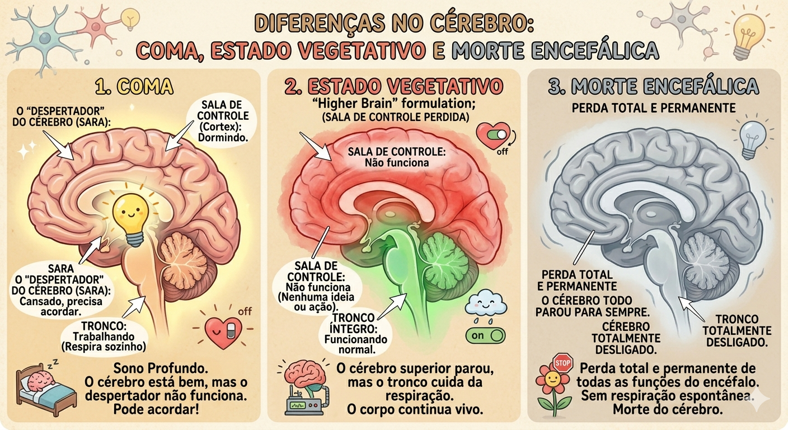
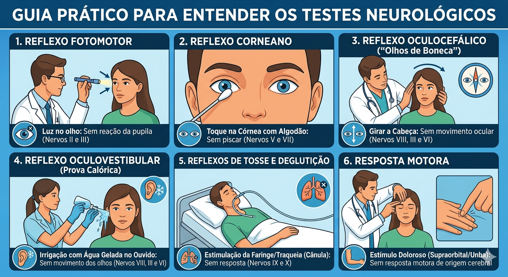
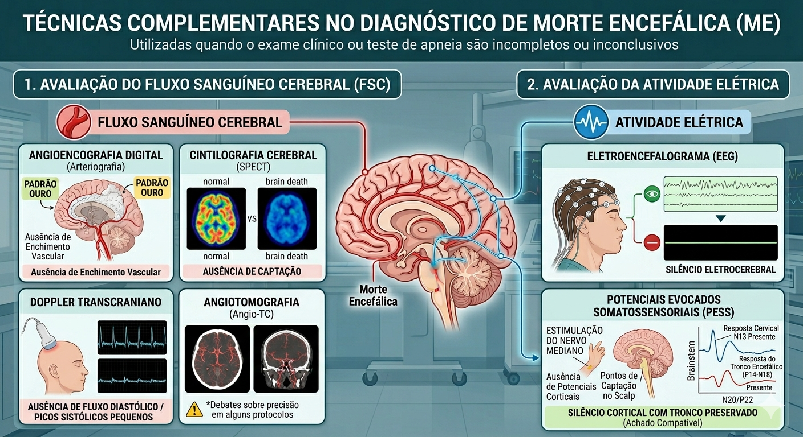
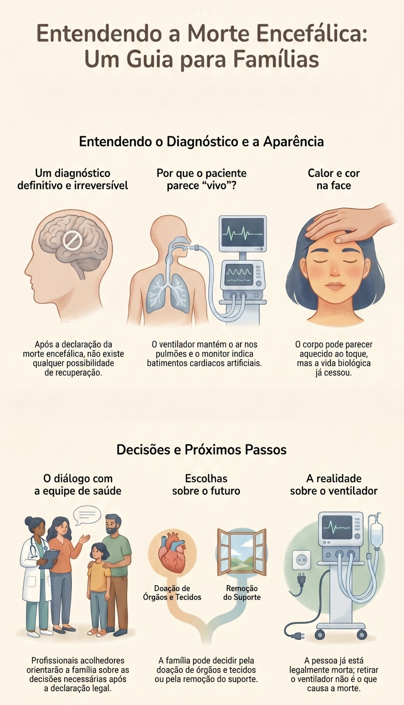
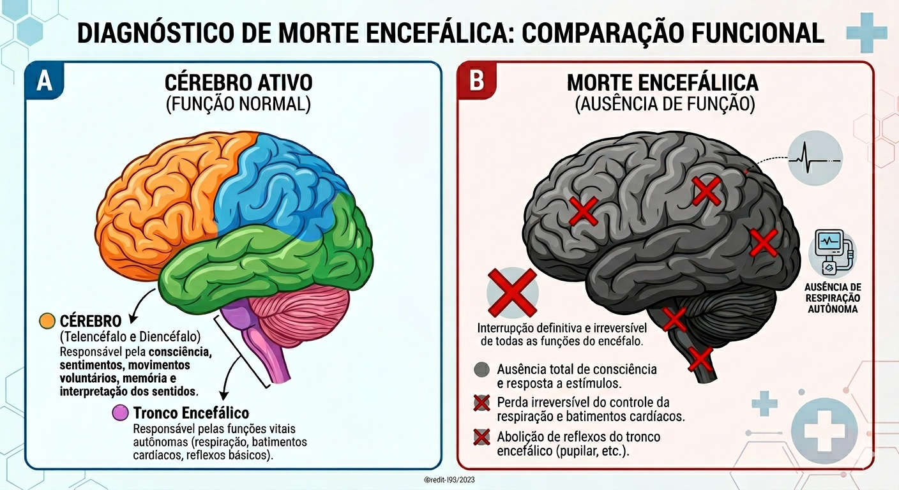
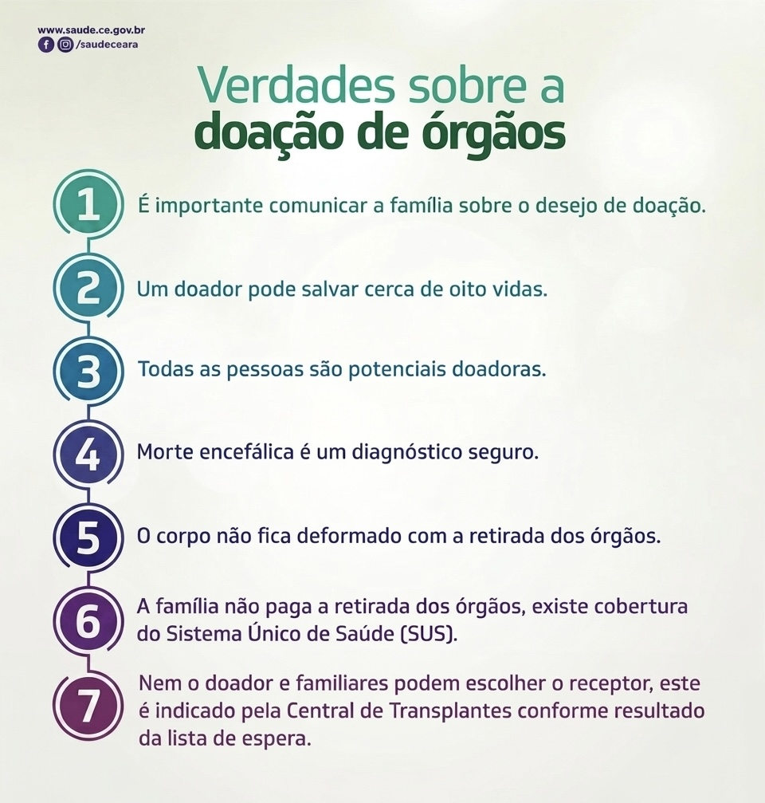
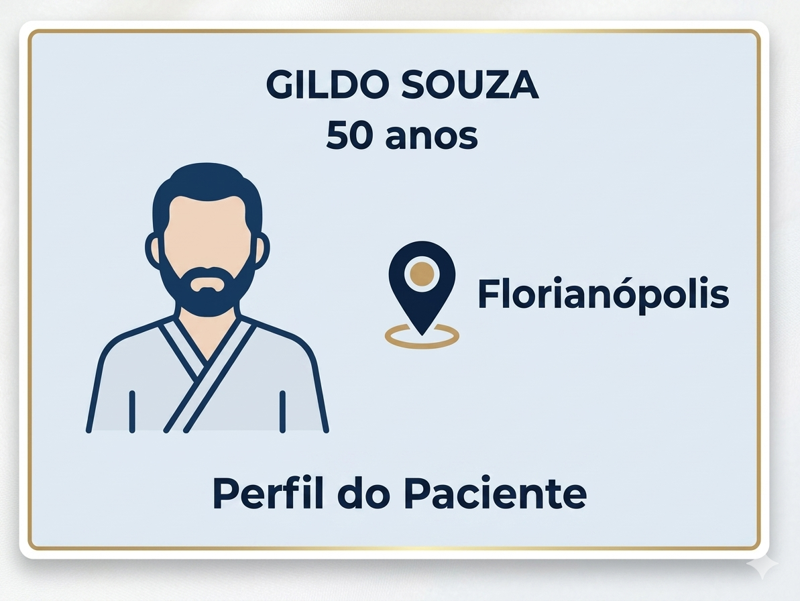
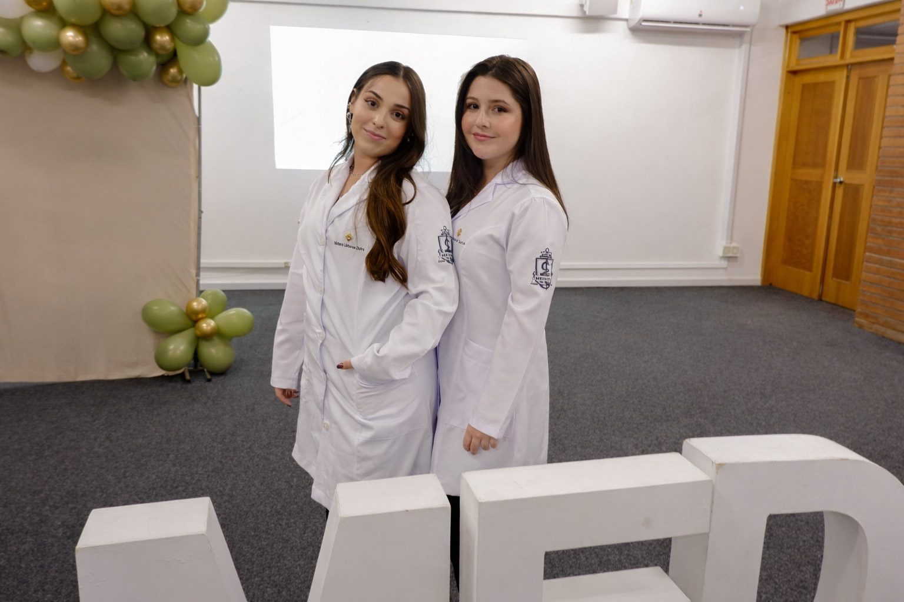

A cessação irreversível de todas as funções cerebrais.
A morte encefálica (ME) é definida como a cessação irreversível de todas as funções cerebrais, incluindo as do tronco encefálico.
Coma ou ausência de resposta
Estado de inconsciência profunda, sem qualquer resposta a estímulos externos.
Ausência de reflexos do tronco
Todos os reflexos do tronco — pupilar, corneano, oculocefálico, oculovestibular, tosse e deglutição — estão abolidos.
Apneia
Ausência de respiração espontânea, mesmo sob estímulo máximo do centro respiratório.
Origem histórica
Foi com tafofobia (medo de ser enterrado vivo) que surgiu a necessidade de confirmar o óbito do indivíduo. Segundo Greer et al. (2020) publicado no JAMA, a morte encefálica é o estado no qual ocorre a perda completa das funções do cérebro e do tronco encefálico, sendo irreversível e diagnosticada por critérios clínicos rigorosos.
Coma, Estado Vegetativo e Morte Encefálica.
Estado de profunda inconsciência e falta de resposta a estímulos, frequentemente causado por disfunção do SARA. O paciente pode manter reflexos do tronco encefálico e ter potencial de recuperação.
Destruição do córtex e hemisférios, mas o tronco encefálico permanece íntegro. O paciente continua respirando espontaneamente.
Perda total e permanente de todas as funções do encéfalo, incluindo os centros vitais do tronco que controlam a respiração.

Como o diagnóstico é feito.
O diagnóstico é estritamente clínico e segue etapas rigorosas:
Pré-requisitos
Causa conhecida e irreversível, como trauma grave ou hemorragia intracraniana.
Exclusão de fatores confundidores
Descartar distúrbios metabólicos graves, intoxicação por drogas (ao menos 5 meias-vidas), bloqueio neuromuscular e hipotermia (temp. central >36°C).
Exame Clínico
Realização de testes de reflexos de tronco e o teste de apneia.
Período de Observação
Tempo de espera para garantir a irreversibilidade, variando conforme idade e jurisdição.
Quais reflexos são testados?
Os testes avaliam a integridade dos nervos cranianos e do tronco encefálico:
Reflexo Fotomotor
Ausência de reação das pupilas à luz.
Reflexo Corneano
Ausência de resposta ao tocar a córnea.
Oculocefálico
Ausência de movimento ocular ao girar a cabeça.
Oculovestibular
Ausência de movimento dos olhos após irrigação com água gelada.
Tosse e Deglutição
Ausência de resposta à estimulação da faringe e traqueia.
Resposta Motora
Ausência de resposta motora cerebral a estímulos dolorosos.

Exames complementares para o diagnóstico.
São utilizados quando o exame clínico ou o teste de apneia não podem ser completados ou quando há incerteza diagnóstica. Eles são divididos em dois tipos:
Fluxo Sanguíneo Cerebral
- Angiografia Digital (Padrão Ouro)
- Cintilografia (SPECT)
- Doppler Transcraniano
- Angiotomografia
Atividade Elétrica
- Eletroencefalograma (EEG) silêncio eletrocerebral
- Potenciais Evocados Somatossensoriais

A regra varia, o rigor não.
Estados Unidos
Médicos atendentes competentes; necessário apenas um exame em adultos.
Índia
ME certificada por quatro médicos, sendo um neurologista ou neurocirurgião obrigatoriamente.
Brasil
A constatação da morte encefálica deverá ser feita por médicos com capacitação específica, observando o protocolo estabelecido que define critérios precisos, padronizados e passíveis de serem realizados em todo território nacional. Serão feitos dois exames clínicos com intervalos variados, realizados por médicos diferentes.
O protocolo no Brasil
A doação dos órgãos e tecidos só poderá ser realizada no caso de paciente em morte encefálica ou parada cardiorrespiratória, se houver autorização de um familiar, como previsto em lei. Se os familiares não autorizarem, a doação não poderá ser realizada.
O protocolo dá segurança à equipe médica para o diagnóstico da morte encefálica e possibilita a imediata conversa com a família sobre a doação de órgãos.
O que perguntam, e o que respondemos.
O que significa "morte encefálica"?
Morte encefálica é a definição legal de morte. É a completa e irreversível parada de todas as funções do cérebro. Como resultado de severa agressão ou ferimento grave no cérebro, o sangue que supre o cérebro é bloqueado e o cérebro morre. A morte encefálica é permanente e irreversível.
Como é decidido que nosso ente querido está com morte encefálica?
O diagnóstico de morte encefálica é estabelecido por um médico por meio de protocolos clínicos rigorosos e baseados em normas médicas consolidadas. O procedimento inclui exames para confirmar que o paciente não apresenta mais reflexos cerebrais e perdeu a capacidade de respirar de forma autônoma. Geralmente, para assegurar a precisão absoluta, os testes são realizados duas vezes com um intervalo de algumas horas entre eles.
Além da avaliação clínica, podem ser feitos exames adicionais, como o angiograma cerebral (que avalia o fluxo sanguíneo no cérebro) ou o eletroencefalograma (que mede a atividade elétrica cerebral). Esses testes servem para confirmar que não há circulação de sangue ou atividade elétrica no órgão. É importante observar que o paciente ainda pode apresentar movimentos ou contrações musculares involuntárias; estes são chamados de reflexos espinhais. Tais movimentos são causados por impulsos elétricos que partem da coluna vertebral e podem ocorrer mesmo após a morte do cérebro. Os familiares podem solicitar ao médico explicações detalhadas ou demonstrações de como o diagnóstico foi concluído.
O que acontece enquanto os testes estão sendo feitos?
Enquanto os testes são conduzidos, o paciente é mantido em um ventilador mecânico (aparelho que realiza a respiração artificial), permitindo que o corpo continue recebendo oxigênio. Também podem ser administrados medicamentos para estabilizar a pressão sanguínea e outras funções biológicas. Esse suporte é mantido durante todo o protocolo, mas não interfere na precisão da determinação da morte encefálica.
Drogas podem dar um falso diagnóstico?
Algumas substâncias, como sedativos e relaxantes musculares, podem mascarar a real função cerebral. Os médicos aguardam a redução dos níveis dessas drogas no organismo. Exames complementares adicionais são realizados para validar o resultado.
Se está morto, por que o coração ainda bate?
O coração funciona enquanto houver oferta de oxigênio, que é fornecida artificialmente pelo ventilador. Sem esse suporte, o coração pararia de bater em pouco tempo, pois o comando cerebral para a vida foi perdido.
Há mais alguma coisa que possa ser feita?
Antes do diagnóstico, todos os esforços médicos são utilizados. Uma vez confirmado, não existe possibilidade de recuperação. Apesar da aparência — corpo aquecido, cor natural — o indivíduo está, técnica e legalmente, morto.
O que acontece após a declaração?
A morte encefálica costuma ser o resultado de lesões ou acidentes súbitos. Após a declaração formal do óbito, profissionais de saúde auxiliam a família nas decisões imediatas que precisam ser tomadas. As principais opções apresentadas são a doação de órgãos e tecidos ou a interrupção do suporte respiratório. É importante esclarecer que, como o paciente já é considerado legalmente morto no momento do diagnóstico, a remoção do ventilador não é a causa do falecimento, mas apenas a retirada de um suporte artificial.

Quais partes param na morte encefálica?
Todas as partes do encéfalo têm suas funções interrompidas de forma definitiva e irreversível.
O Cérebro
Telencéfalo e Diencéfalo
Responsável pela consciência, sentimentos, movimentos voluntários, memória e interpretação dos sentidos.
O Tronco Encefálico
Controle vital autônomo
Responsável pelas funções vitais: respiração, batimentos cardíacos, pressão arterial e reflexos básicos.
Explore o modelo 3D · Clique nas regiões
Passe o cursor sobre o cérebro
Clique em qualquer região para ver sua descrição.

Números que importam.
SC liderou o ranking nacional de doadores efetivos por milhão de população.
Taxas comparáveis às de países europeus líderes em doação.
Taxa de não autorização familiar caiu de 70% (2007) para 32% (2025) em SC.
AVC (Acidente Vascular Cerebral) é a principal causa de ME, somando os tipos isquêmico e hemorrágico (este último com grande incidência em casos de ME). TCE (Traumatismo Cranioencefálico) é a segunda causa principal, geralmente decorrente de acidentes de trânsito (especialmente envolvendo motocicletas) e quedas.
Doação de Órgãos.
O que é a doação de órgãos?
A doação de órgãos é o ato de ceder órgãos ou tecidos saudáveis de uma pessoa viva ou falecida para outra que precisa de um transplante.
Como a doação de órgãos acontece no Brasil?
Existem algumas etapas importantes sobre a doação de órgãos no Brasil:
Autorização da família
A família precisa autorizar o procedimento de doação de órgãos, quando acontece em caso de morte encefálica do ente. Por isso, a família é informada sobre a morte encefálica e sobre o desejo de doar ou não os órgãos saudáveis desse paciente.
Avaliação médica
A equipe médica avalia as condições dos órgãos para entender as possibilidades de doação e compatibilidade dos possíveis receptores.
Confirmação da Morte Encefálica
A doação de órgãos por morte encefálica só é permitida quando o diagnóstico é confirmado por meio dos testes necessários e quando é confirmado o não funcionamento irreversível do cérebro.
Cirurgia de retirada dos órgãos
Quando a família autoriza a doação, os órgãos são retirados por uma equipe médica especializada, com todo cuidado para garantir a preservação e manter a qualidade do órgão que fará parte da vida de outro paciente.
Preservação e transporte
Os órgãos são devidamente preservados e transportados para os hospitais em que serão realizados os transplantes. É necessário que isso seja feito de forma rápida e segura, para garantir a sua viabilidade.
Transplante
Os órgãos doados são destinados a pessoas que estão na fila de espera por um transplante, passaram por avaliações médicas e são compatíveis com o doador. Assim, a cirurgia é realizada.
Quais órgãos podem ser doados?
Além desses, diversos tecidos também podem ser doados, como: ossos e válvulas cardíacas.
Quem pode ser doador de órgãos?
Qualquer pessoa pode ser doador de órgãos em vida ou pós morte, desde que atenda aos requisitos:
Comunicar a vontade
Ter registrado, em vida, a vontade de ser doador de órgãos e conversar com a família sobre essa vontade, já que é dependente disso para a autorização em caso de morte encefálica. Além de deixar esse registro em documentos como CNH e Identidade.
Idade
Cada órgão tem um limite de idade para doação, para que seja garantida sua qualidade. Por exemplo, o fígado pode ser doado até os 70 anos, enquanto a córnea não tem idade limite.
Condição de saúde do doador
É necessário que os órgãos estejam em condições adequadas para doação — o que é avaliado pela equipe médica.
Saiba mais sobre a doação de órgãos

Entrevista com Especialista
Vídeo em breve.
VÍDEO PLACEHOLDER — URL EM BREVE

Gildo Souza — Transplantado Renal
Conheça a história de quem recebeu um rim e pôde voltar a sonhar. A entrevista completa está na página dedicada.
Ler Relato Completo →Operação Transplante — HBO Max
Série documental que acompanha o processo de transplantes no Brasil, mostrando a realidade dos pacientes e profissionais envolvidos.
Duas estudantes, um convite a entender.
Esse trabalho é composto por duas estudantes de medicina do primeiro período da Univali — Universidade do Alto Vale do Itajaí (SC).
Muito prazer, nos chamamos Bárbara Linhares Dutra e Maria Eduarda Santos e criamos esse site com o intuito de informar de maneira acessível, para quem busca saber mais, sobre a morte encefálica e a doação de órgãos no Brasil.
Neste site trouxemos dados e informações baseadas em artigos como "MORTE ENCEFÁLICA E DOAÇÃO DE ÓRGÃOS E TECIDOS — BRAIN DEATH AND ORGAN DONATION", a fim de trazer os conceitos da melhor maneira — embasado em ciência e estudo.

O nosso público alvo é amplo, tendo em vista o tipo de linguagem que, apesar de formal, é compreensível pelas diversas esferas da sociedade, visto que o tema é importante em todo o cenário nacional e deve ser entendido e disseminado.
Nesse site explicaremos o passo a passo do diagnóstico da morte encefálica, bem como esclarecer dúvidas frequentes. Para isso, trouxemos vídeo de profissional da área da saúde: Bombeiro Alexandre Correa.
Além disso, na aba "Relato de caso", trouxemos um relato de um paciente que realizou transplante de rim e compartilhou um pouco da sua história conosco.
Esperamos que nosso trabalho consiga atingir o objetivo principal: tornar esse assunto tão delicado e sensível, entendido por parte dos que lerem. Esperamos que nosso trabalho faça a diferença na vida de alguém!
— As autoras